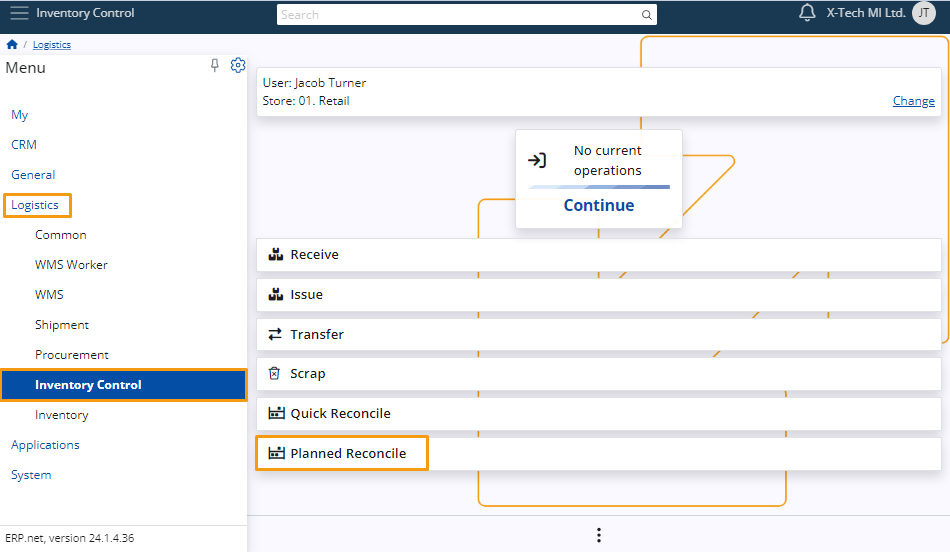
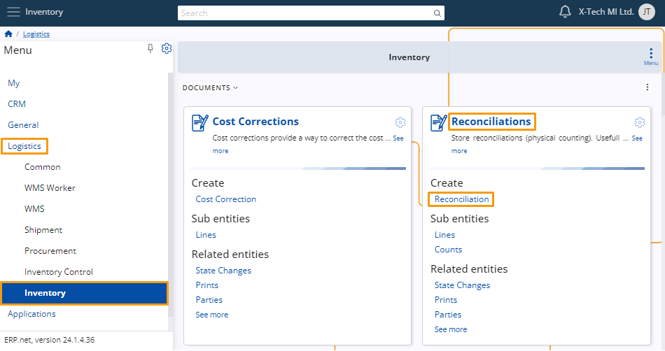
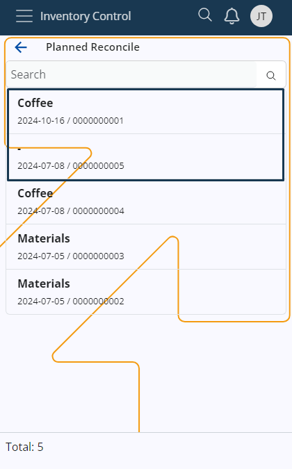
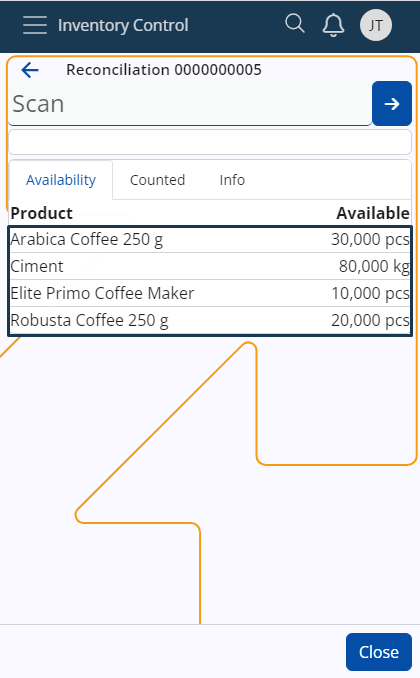
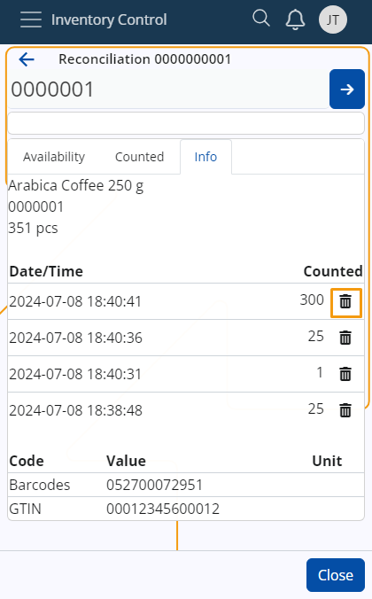

Planned Reconciliation
In ERP.net, Planned Reconciliation optimizes inventory management by allowing users to efficiently organize and filter inventories based on their status (Planned, Firm Planned), store location, and recent dates.
This feature enhances visibility and control, providing comprehensive details such as Default Product Group, Document Number, and Document Date directly within the inventory list.
Planned Reconciliation is ideal for comprehensive, scheduled inventories, such as annual counts or planned audits based on product groups.
In contrast, Quick Reconciliation is designed for fast, on-the-spot counts or when discrepancies are observed.
Navigation
To use Planned Reconciliation, go to Logistics -> Inventory Control -> Planned Reconciliation.

Planned Reconciliation usage
Here are the steps required to perform a Planned Reconciliation.
Create a Reconciliation document
The reconciliation is for store reconciliations (physical counting), useful for real-world inventories, and establishing an opening balance.
Navigation
Go to Logistics -> Inventory -> Reconciliations -> Create Reconciliation.

New Reconciliation
To perform a reconciliation, you must fill in certain fields: Default Store, Default Product Group, and Reconciliation Type.

Reconciliation Type
There are two options for Reconciliation Type: Full and Partial.

To proceed with a Planned Reconciliation, you must first select a product group.
During the audit of this group, uncounted products will have their quantities set to zero in Full Reconciliation, while in Partial Reconciliation, their previous quantities will be retained.
[!]Note: For a Reconciliation to appear in Planned Reconciliations, its status needs to be set to planned.

View Planned Reconciliations
When you navigate to Planned Reconciliations in Inventory Control, you will see a list of all upcoming reconciliations and those from the past week with the status set to Planned.

[!]Note: If a reconciliation has a product group, it will be named accordingly. If not, it will be named “-”.

Planned Reconciliation Execution
Clicking on a reconciliation in the list will open the Availability tab.
Here, you will find all products from the assigned product group in the storage.

If no product group is assigned, the entire storage availability will be shown.

Scan Products
To scan products, click on them and then click the arrow button.
[!]Note: For more information about how to scan a product, go to our article on the subject

The info panel logs all scans, showing the time of each scan.

You can also delete scans from this log if necessary.

[!]Note: You can see the scanned products in Counted.

[!]Note: The platform retains information about ongoing Planned Reconciliations persistently, even if you navigate away from the page or close the platform entirely.
Calculate reconciliation based on the counts
The "Calculate reconciliation based on the counts" function consolidates product quantities from the Counts panel of a reconciliation order into summarized lines in the Lines panel.
It ensures that products counted in the same store and product group are either summed up or represented with a zero quantity, depending on the reconciliation type (Partial or Full).
For more information, you can read our article on the subject.
Note
The screenshots taken for this article are from v24 of the platform.